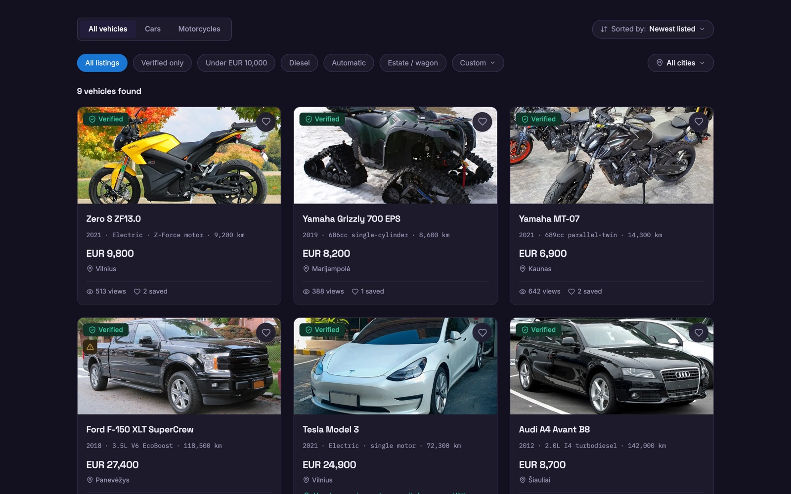
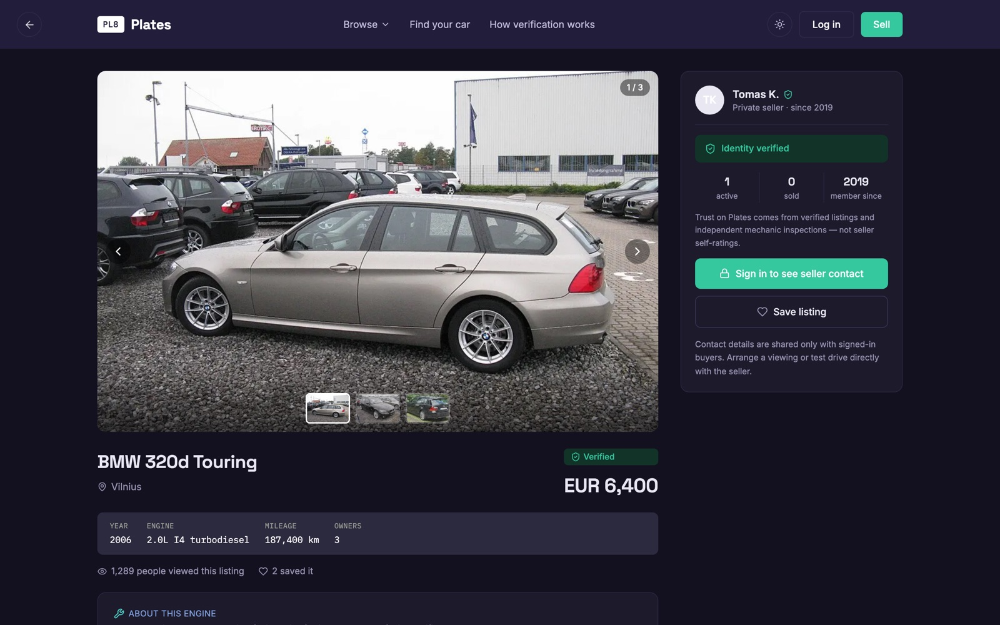
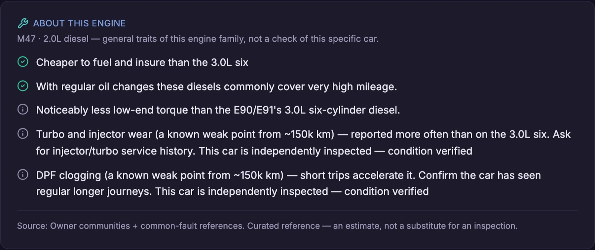
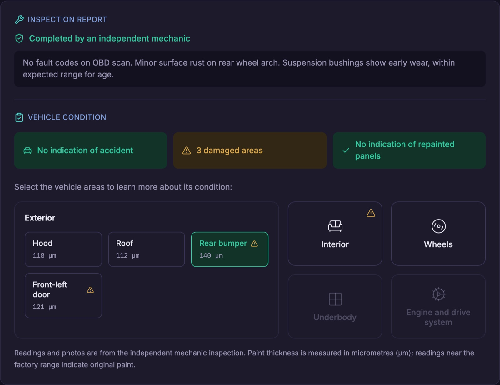

Mechanical
Engine, transmission & drivetrain.
A trust-first car marketplace · launching in Lithuania
Buying a used car online means trusting a stranger's word. Plates replaces that leap of faith with proof — verified inspections, honest listings, and plain-English guidance on what you're really buying.
The problem
The used-car market runs on mistrust. An honest seller with a genuinely good car has no way to prove it — so everybody loses to the same missing thing.
The idea
Instead of asking people to take a listing on faith, Plates shows its work — three ways.
Structured, complete information about every car — not a vague ad with four photos and a phone number.
A real, independent mechanic checks the car. When a listing says “Verified,” it's been earned — not self-declared.
Plain-English insight on each car — reliability, running costs, what to check — written from real data and checked by a person.
How it works
Every step is designed to remove a reason to doubt.
Browse and filter the way you'd expect — or answer four quick questions and let the “find your car” quiz rank the best matches, with a plain reason for each.
Each listing is a full, structured profile: specs, history, photos, and honest signals about the seller — no invented five-star ratings.
An independent mechanic inspected the car and filed a real report — condition, faults, service history. The badge means a professional actually looked.
Independently inspected“About this engine” tells you what owners of that exact engine actually experience — which ones go the distance, the known weak points and when they tend to appear, and what to ask before you buy.
Curated insightTypical service and parts costs for that engine — oil, brakes, filters, timing belt — shown up front, so there are no surprises after you've bought.
Ownership costsOnce you're signed in, the seller's contact is revealed and you arrange a viewing directly — now that you actually know what you're going to see.
What makes a Plates listing different
An independent mechanic checks the car and files the report — the step that turns a claim into a fact.
Expert notes on that engine's real-world reliability — playing fair with sellers.
The routine service and parts costs for that engine — estimated before you commit.
For EVs & hybrids, the real battery health — measured, not guessed.
No invented ratings — just verified listings and inspections a buyer can check.
Four questions, then ranked matches — each with a plain reason it fits.
Book a real mechanic through Plates — an inspection, a full service, or a done-for-you listing.
What a verified inspection covers
When a Plates listing reads “Verified,” an independent mechanic has been over the whole car — point by point. Hover a marker to see what's checked.
Hover or tap a marker
Engine, transmission & drivetrain.
Accident, rust & flood damage.
Real-world driving performance.
Fault codes read & shared.
Not a mockup — the working product
Real screens from the running app, on live data — the same panels a buyer, seller and mechanic use today.

Every listing fully declared. Buyers search independently inspected cars from the very first screen.

Verified-only, price, fuel, body type. Every card shows real views, saves and whether it's been inspected.

A structured profile — gallery, VIN-plate specs, the Verified badge and honest seller signals. No invented ratings.

Curated, real-world notes on that exact engine — strengths and known weak points — softened when the car's been inspected.

OBD scan, accident and repaint checks, and per-panel paint-thickness readings — filed by an independent mechanic.

Open inspection and service jobs on an interactive map — placed by city, so a mechanic grabs what fits their day and arranges the exact address with the customer directly.
Why the guidance can be trusted
The fastest way to destroy a trust product is to let it guess. Plates doesn't.
Every “smart” note comes from real, curated data and is checked by a person before a buyer ever sees it. If we don't know, we show nothing — we never invent it.
A seller who gets the car inspected and fills in the details earns a stronger, more convincing listing. Even a known engine quirk becomes a selling point when the inspection shows this car is fine.
Insight describes the car and the market — never accusations about one seller. Buyers get the truth; sellers get a fair shot at proving a good car.
As new cars are listed, the system flags which models need expert notes next — and a person still approves everything before it goes live.
Why everyone wins
Lower the friction on both sides of the deal — buyers stop gambling, and honest sellers finally get rewarded for a good car.
See the real condition, understand the car, know the running costs — and walk in already knowing what you'll find.
An honest, well-kept car has always been worth more. On Plates, a verified inspection and a complete listing let it show — and command the price it deserves. And you're kept in the loop: get notified the moment a buyer saves your car or asks for your contact.
Where it is today
This isn't a concept deck — the product is built and running.
Detailed listings. Real inspections. Honest guidance. A car market where the good cars — and the honest people selling them — finally win.